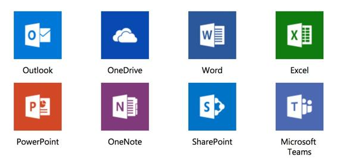

Office 365
One of the most popular products that Microsoft has had for multiple years is Microsoft Office. With the advent of cloud, Microsoft started a SaaS offering of the same set of applications under the umbrella of Office 365. So, with that, anyone (home, business, or education users) could go online, get a subscription of the Office 365 suite, and start using it directly from the browser of their choice. Now, although this is a cloud-based offering from Microsoft, it technically doesn't fall under the Azure umbrella as Azure is more infrastructure and platform services oriented. However, we still wanted to cover it here, as Office 365 is an important piece to Microsoft's overall cloud business and many enterprises while making a move to cloud also factor in Office 365 as one of the core applications to migrate to in that transformation journey. The following are the applications that Microsoft offers as part of Office 365:

As we discussed previously, there's a close link between Azure and Office 365, and one of the main areas of integrations is authentication. What this means is that behind the scenes, Office 365 uses Azure AD to manage user identities. The other benefit of this linkage is that if a customer is using Active Directory on-premises for their user identities, then they can sync the passwords from there to Azure AD and set up single sign-on as well. This makes it easier for the end users as they don't have to remember additional credentials other than their corporate identities, and the experience of logging into Office 365 is also seamless.
One another reason that Office 365 is important is because of competitive reasons with other cloud providers. So, although AWS offers a set of business applications (such as Amazon Workdocs and Amazon Chime), and likewise Google has G Suite, from an enterprise adoption perspective, Microsoft has had the lead for multiple years. Office has been the de facto collaboration and productivity platform. So, for this reason as well, it makes it easier for customers to migrate and adopt Office 365 with minimal disruption to their business.